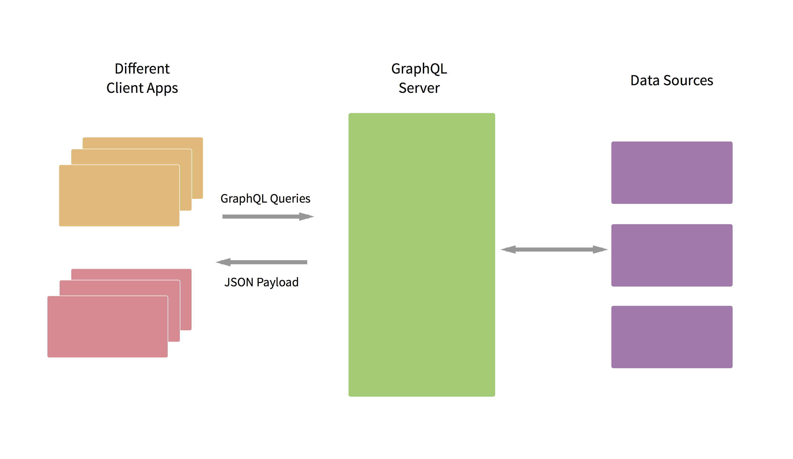

What in the world GraphQL is?
 There’s a lot of mystery behind GraphQL but it’s not difficult to understand, what it actually is, and what it does. Because of it’s really Sci Fi name I was sure I won’t understand it. But after learning more about it. I was like this dog. Chilling!
There’s a lot of mystery behind GraphQL but it’s not difficult to understand, what it actually is, and what it does. Because of it’s really Sci Fi name I was sure I won’t understand it. But after learning more about it. I was like this dog. Chilling!
GraphQL is used to build data mongering client applications in a really intuitive way. It’s a Query Language used to request the data from the server. You send a GraphQL query to the server and it sends you the data back (exampele: JSON Payload) according to the query you sent. No need for a hundred different REST routes in order for getting complete data you want.
GraphQL is an application query language. It makes no assumption of the protocol you are using, the query is just a plain string which you give to the GraphQL implementation.
GraphQL is also hiearchial, which means you can accomplish much more in one query too than the rest lets you do in many queries.
Client decides how the data needs to be structured, instead of server which lets us make it backwards compatible and at the same time upgrade for the newer version of clients.
Data requirements probably will change with time but it doesn’t always mean you will be allowed to change the client according to your data specs too. GraphQL allows you to make flexible queries and leaves defining the data structure to the client. This is a really helpful image I found from LearnGraphQL on how GraphQL application communicates for data 
GraphQL is strongly typed, providing you with awesome development stage compiling features which are really helpful for the debugging and let’s you debug the queries and code before it all ships.
You can access the GraphQL specification here and maybe create an implementation of it for the language you love.
There’s a great blog post on React Github Pages about GraphQL here. It explains many of the pros of the GraphQL and why there was a need of GraphQL in facebook internally.
Querying the GraphQL
We have hundred recipes in our Grand Cooking database. We need to retrieve the latest one with the following information hiearchy if possible:
- latestRecipe
- id
- title
- description
- ingredients
- uploader
- id
- dateJoined
The GraphQL query for it will look like this
{
latestRecipe {
_id,
title,
description,
ingredients,
uploader {
_id
dateJoined
}
}
}
IMHO, the query doesn’t look much different than what we specified in the bulleted list. Now, provided database has the data we requested and GraphQL is implemented on the back end we will get our following neat response in form of a JSON payload.
{
"data": {
"latestRecipe": {
"_id": "31231",
"title": "Best Big, Fat, Chewy Chocolate Chip Cookie",
"instructions": "Preheat the oven to 325 degrees F (165 degrees C). Grease cookie sheets or line with parchment paper.Sift together the flour, baking soda and salt; set aside.In a medium bowl, cream together the melted butter, brown sugar and white sugar until well blended. Beat in the vanilla, egg, and egg yolk until light and creamy. Mix in the sifted ingredients until just blended. Stir in the chocolate chips by hand using a wooden spoon. Drop cookie dough 1/4 cup at a time onto the prepared cookie sheets. Cookies should be about 3 inches apart.Bake for 15 to 17 minutes in the preheated oven, or until the edges are lightly toasted. Cool on baking sheets for a few minutes before transferring to wire racks to cool completely.",
"ingredients": [
"2 cups all-purpose flour",
"1/2 teaspoon baking soda",
"1/2 teaspoon salt",
"2 cups semisweet chocolate chips"
],
"uploader": {
"name": "ELIZABETHBH",
"_id": "183690"
}
}
}
}
Don’t try to make cookies from this recipe though, for this complete recipe by ELIZABETH click here (AllRecipes.com link)
Look at the JSON Payload, we have achieved so much in one query, so it’s automatically going to be really helpful in our product development.
Learn more about the basic queries here on LearnGraphQL
Many more goodies
GraphQL supports great features for making more elaborate and robust queries.
Mutating the database
We just don’t need to get the data from the database, but also mutate it, change it and it’s really simple and feels like you are passing some data to the function. A simple mutation query in order to add a chef will be like this:
mutation {
createChef(name: "Hanan Ali", everCooked: false){
id
name
}
}
Unlike querying you need to specify mutation here. After the successful creation of the query, we request the name and id to get back to us. It can’t get any simpler. Learn more about mutations here
Fragments
Fragments are really awesome and I found them like modules. It helps in abolishing the repetitiveness in code while requesting contents. If I know that I only want the id and name of the recipe uploader. The authorInfo contents can be rewritten as a fragment as shown below
recentPost {
title
description
author {
...authorInfo
}
}
fragment authorInfo as Author {
id
name
}
After defining the fragment, it’s as simple as calling the name of the fragment in this case it is ...authorInfo
You can learn more about the fragments here
GraphQL.js implementaiton
Facebook has created a reference implementation of GraphQL in JavaScript and it’s located here. Also, there exist many community maintained GraphQL implementations for other languages too. In order to create a GraphQL HTTP server really quick in Node.js. You can use express-graphql. It’s in my list to do awesome stuff using it this month. Make it in yours too.
LearnGraphQL
The awesome stuff in GraphQL is too hard to properly cover in one blog post. There are many great features such as Query Variable, Parallel queries etc.
Therefore, Kadira has made LearnGraphQL for people who want to learn it using practical examples through LearnGraphQL Sandbox. I have learnt a lot from it, and I hope you too learn from it too.
FOSSASIA
This blog post was done as task in Google CodeIn with FOSSASIA. FOSSASIA is playing a major role in promoting open source development and collaboration in the region of Asia and also all over the world. FOSSASIA is really commited in doing what it does and is totally awesome organization which you can help in achieving their goal. It will be so really cool and awesome if you visit FOSSASIA here. Also, Visit their Github page here